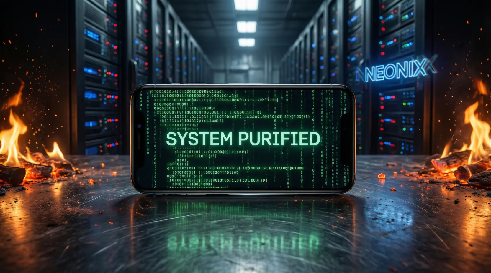

「我們無法選擇硬體的產地，但我們可以決定每一行指令的去向。」這是一場數位游擊戰。透過物理隔離與 ADB 外科手術，我將一台預裝百款監控軟體的手機，改造為執行全球標準隱私協議的「鋼鐵戰車」。
Phase 1: 物理隔離與初始化 (Physical Isolation)
新機入手絕不插 SIM 卡，不聯網。跳過所有帳號登入與「雲服務」陷阱。將地區設定為「日本 (Japan)」，系統語言切換為繁體中文或英文。這是在邏輯層面進行的第一步「去國產化」，切斷數據備份回傳的物理路徑。
Phase 2: 外科手術式清理 (ADB Surgical Strike)
開啟 USB 調試，利用指令 adb shell pm uninstall --user 0 [package] 暴力卸載 70-100 個預裝 App。
重點清理清單：系統自帶瀏覽器、應用商店、語音助手及所有「全家桶」相互喚醒組件。讓中階機重獲旗艦級流暢度。
Phase 3: 生態重組與防禦 (Ecosystem Rebuild)
利用 MicroG 模擬 Google 框架以節省電量，透過 Aurora Store 匿名獲取全球應用。必裝 NetGuard 防火牆斷掉不信任 App 的聯網權限，使用 Aegis 進行雙重認證。現在，手機回歸工具本質，不再是廣告與監控機。
結語：奪回數位自由的掌控權
當我用著這部「洗淨」的手機，在 Outlook 的 受信トレイ 裡冷靜處理表單通知時，那種掌握技術底層帶來的爽快感，遠比昂貴的新旗艦更迷人。關掉微信與 QQ，不是斷絕聯繫，而是為了讓每一行指令都服務於我的意志。